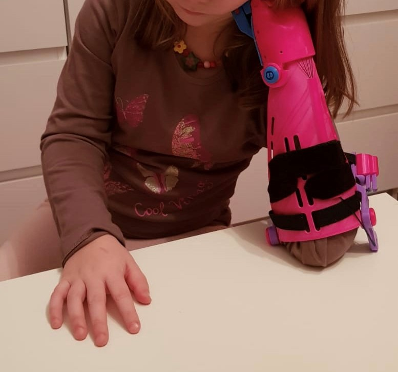
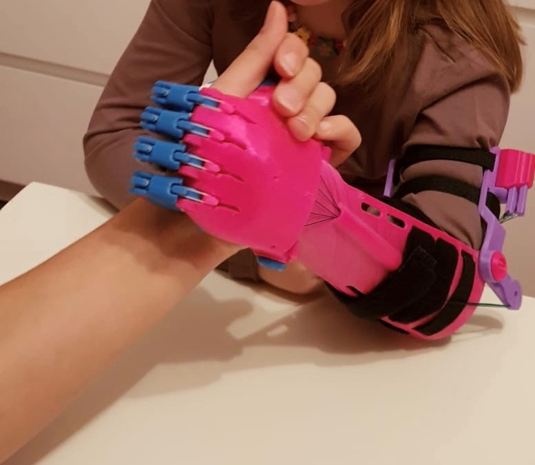
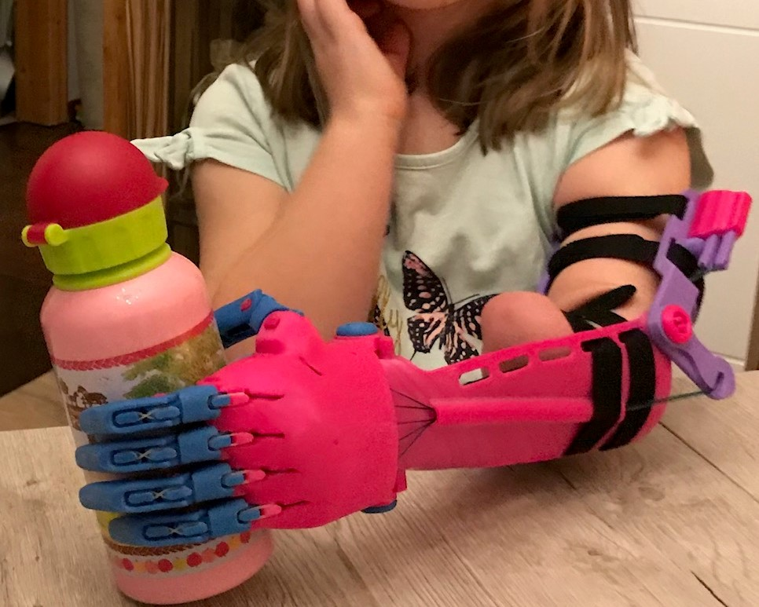
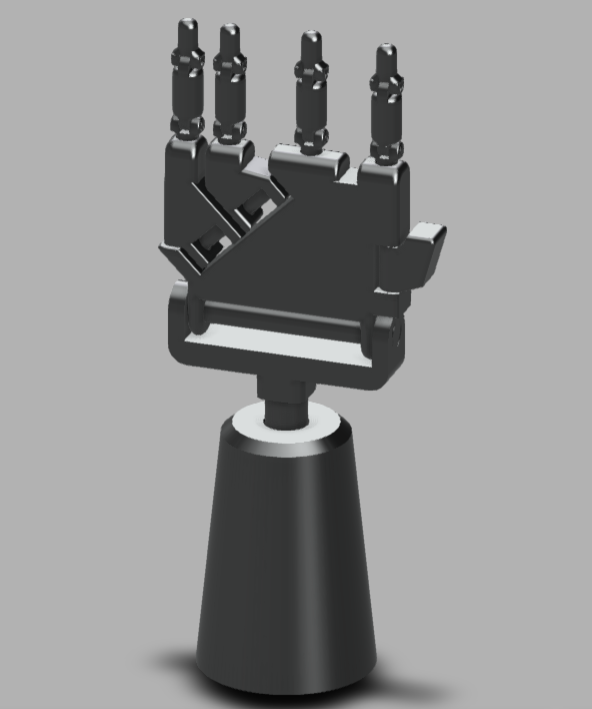

After considering different projects in which we could
work, such as braille instant reader, a device to help people with
Parkinson and many other, we have decided that we wanted to work with a
little child who doesn’t have the left arm.
Getting involved with the project:
At the moment, the girl has an orthosis that was created
by Lars Thalmann, person whose project we will try to improve, in order
to suit better to the girl. In order to work in a more productive way,
we have concerted a meeting with Lars on January 11.
The orthosis the girl is wearing, covers a lot of
functions that made her life much easier, and she has adapted to make it
suit all the different environments she faces, but we thought that
maybe we could work on it and try to better the arm.
Description of the current orthosis:
First of all, we are going to describe the orthosis she
wears right now. This orthosis is fixed by four different straps to her
left arm. There are two straps right down the shoulder, and two
different straps at the top of the elbow. These straps can be adapted
thanks to the use of Velcro.
When describing the arm-like part of the orthosis, we
can clearly define two different areas. The one which is down the elbow,
which is simulating an arm and a hand, and the upper part, which is the
one that lets the arm part rise.



Developing our own ideas:
Since this will be a customized orthosis, it is
important that we take exact measures of the girl. We would need to
measure the length of the forearm and arm, the diameter and all the
different physical magnitudes. Afterwards, we would have to use the 3D
scanner as we did in class, and make a good scanner of the arm and
forearm.
Once we had that, we would start to work with the other
variables. When doing the project, we must consider three different
fields of work: the mechanical part, the electronic part and the design
part.
Lets start talking about the design part:
One of the things that we know, is that the mother wants
to have a textile that covers the forearm. When thinking what the most
appropriate textile would be to put there, we thought that it should be
an elastic piece of fabric, since the biceps and triceps are muscles
that suffer a big conformational change when contracting and relaxing.
Then, we thought that it could also be nice to make the textile
waterproof. After doing some research, we found that solid laminated polyurethane
would be the textile that can cover the requisites. In order to not
interfere with the different straps that are used to be able to wear the
orthosis, we thought that we could use some Velcro at the part that
would be in the internal forearm (part facing the torso).
Additionally, we though that the straps could made more
comfortable. In order to reduce the pressure that they make in the
girl´s arm, we thought that we could add some padding into them.
Now lets talk about the mechanical part:
In order to do this part properly, we have to consider
how our orthosis is going to be like, and if we keep the actual design
or try to make a new one.
We made a model of a hand, that needs to be smoothened,
but we think it could work for the girl.

What we want to make is the arm to be able to go up and
down, when the girl needs it, and the hand to be able to close and catch
different objects.
In order to make the arm go up and down, since she has a
little part of arm, these actions can be made mechanically by her. It
would be interesting to introduce some kind of mechanism such as pulleys
that would let her do the activities without having to make much effort
with the biceps.
As mentioned above, we wanted to make the girl be able
to grab things with the hand, by making the orthosis responsive to the
movements the girl makes. After doing some research, we found that with
the use of electrodes, amplifiers and a 4,8V accumulator (6 V for adults)
, some new prosthetics and orthosis use measure the difference in
electric current when the muscles open the Ca2+ channels, in order to
contract. These are called myoelectric orthosis , and is
something we would like to work with to try to make the hand close when
she contracts the muscles, and open when she is relaxed.
In order to be able to do this, we should measure the different potentials of the girl with an electromyogram and then program it into an Arduino.
Finally, lets talk about the electronic part:
This is the part that we would like to leave for the
end, since is more a refinement part. We would have to do some basic
circuitry with a motor, the electrodes and the amplifiers, but will look
more into detail once we are in the lab.